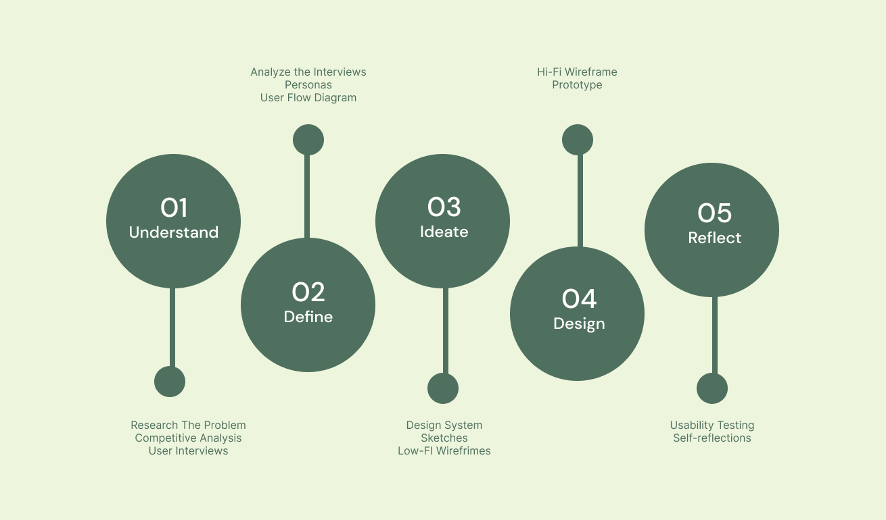
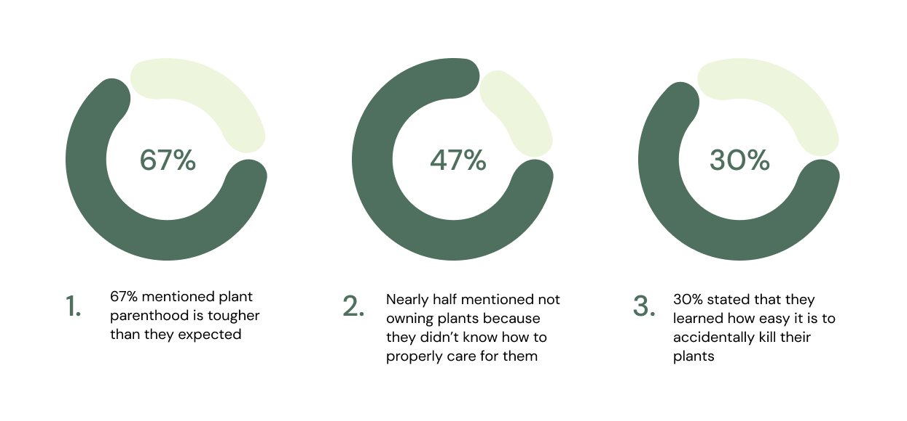
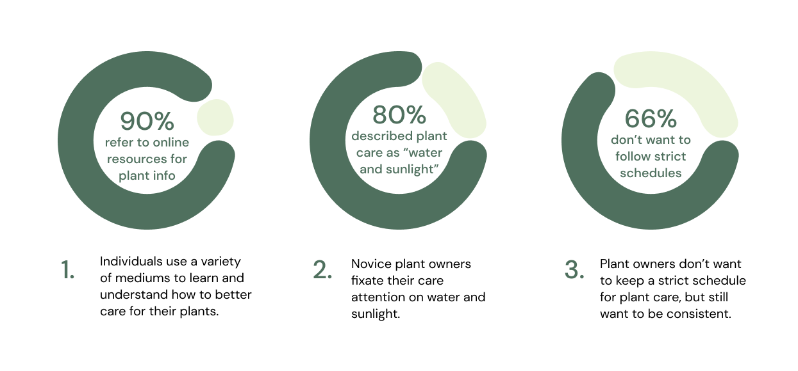
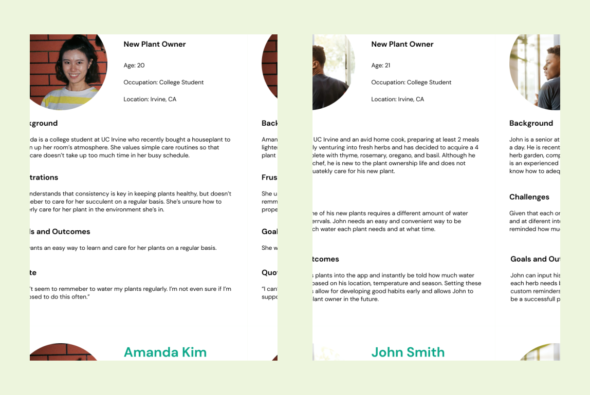
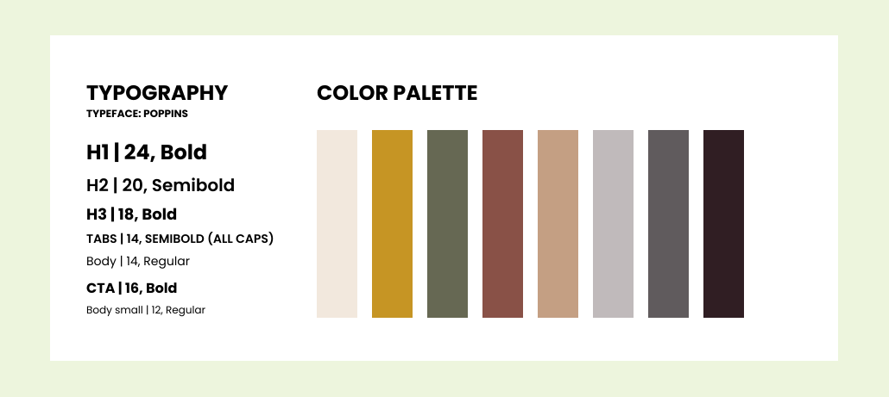

Rooted
An app for new plant parents
Background
UC Irvine Informatics 132 Project Winter 2022
Duration: 10 weeks
Role: UX/UI Designer
The Design Team: Carly Chan, Hannah Limary, Regina Tambunan, Kevin Tsai, Rohan Hemrajani
Purpose: With plant parenthood on the rise, novice plant owners are faced with a more difficult than expected task of maintaining their plant’s health. Our team designed a mobile application to better educate plant owners about their plants and how to properly take care of them in order to ease novice plant owner worries and help keep their plants healthy.
At A Glance 👀
The Problem
The Solution

Design Process
Understand
In order to create a product that really meets the needs of our target audience, we decided to research the problem space, analyze current competitors, and interview potential users. These steps helped us gain a better understanding of user’s pain points and give insight on potential ways to help.
Research
Evidence - Deseret Article / NY Post Article
Competitive Analysis
We analyzed 6 direct and indirect competitors in order to analyze existing patterns in the current market and identify key areas for improvement. By seeing what is already available in the market, we can create a more unique product that caters to what users actually need.
User Interviews
In order to gather data on the user's needs, we interviewed 12 participants across a range of experience levels (with plants). We then analyzed the information gathered from the interviews to identify key insights and patterns.

Define
User Interview Insights
After interviewing all 12 participants, we came together as a team to identify meaningful data that would help guide our future designs.
Personas
In order to visualize the type of users we would have, we created user personas. These personas helped us identify user pain points and motivations to use our app.
User Flow
After analyzing the results of the interviews, we narrowed our focus to new plant owners who want help in plant care basics.

Our user flow design walks users through all our features, given the navigation bar at the bottom of each page.
Ideate
Design System
For the sake of consistency throughout our design process, we created a design system. This set of guidelines will ensure consistent design and create a more cohesive look.
Low-Fi Wireframes
After evaluating and critiquing our sketches within our group, we found that there were changes to be made in our sketches to include into our mid-fi wireframes, as well as other features we wanted to include. Our full feature list includes: onboarding, plant encyclopedia, reminders, plant scanner, explore, and user profile.
- Onboarding: The encyclopedia of plants gives an organized list of plants so it’s easy to find your plant by name, or simply if you want to scroll through and look at additional plants
- Encyclopedia: the explore section of the app allows users to filter plants by characteristics and learn more about their own plant or look at other plants as well.
- Reminders: The encyclopedia of plants gives an organized list of plants so it’s easy to find your plant by name, or simply if you want to scroll through and look at additional plants
- Scanner: the explore section of the app allows users to filter plants by characteristics and learn more about their own plant or look at other plants as well.
- Explore: The encyclopedia of plants gives an organized list of plants so it’s easy to find your plant by name, or simply if you want to scroll through and look at additional plants
.svg)
Design
Onboarding
To make everything more personalized to the user, we created a straightforward onboarding process that can help show information more relevant to what the user may need to properly care for their specific plant type based on their experience level and location.
- Straightforward Questions: clearly defined questions that will not leave users wondering if they made the right choice
- Identify Relevant Information: gathering data on the local climate or plant type can help make a personalized care plan for the user
Identification
In order to make the plant identification process easier and faster, we decided to make a plant scanning feature that will allow users to input their plants with a quick camera scan. Knowing what plant you have is crucial to knowing how to properly care for it's specific needs.
- Time-efficient: scanning the plant is a quick and easy method that provides users with the plant’s information at a much quicker rate than searching through plant images/names
- Convenient: a quick camera scan can save so much time and effort from users who wish to identify their plants but don’t know where to even start
Education
Users mentioned that they wanted to be more informed about their plants in order to feel more readily prepared to care for them. To accomplish this goal, we implemented a plant encyclopedia which provides a list of alphabetically sorted plant names, as well as a search bar for easier navigation. Once the desired plant is selected, an information card of the plant is presented, giving information regarding it's care, issues, and background.
- Organized: The encyclopedia of plants gives an organized list of plants so it’s easy to find your plant by name, or simply if you want to scroll through and look at additional plants
- Explore: the explore section of the app allows users to filter plants by characteristics and learn more about their own plant or look at other plants as well.
Schedule & Reminders
Many users wanted help with keeping a consistent schedule for their plant care. To address this, we implemented a reminder & notification feature that will notify users of any immediate tasks, upcoming tasks, and prior tasks for each of their plants.
- Reminders: allowing the app to notify users of plant care updates or weather updates can help forgetful users of when their plant may need watering, sunlight, or additional care. This can help keep plants healthier and living longer.
- Scheduling: by having an entire schedule laid out, users can see in advance what their plant will need at a future date and plan accordingly.
Prototype + User Testing
To evaluate our high-fidelity prototype, we created a usability testing process. This process was designed for an interviewer to walk a user through a series of tasks, testing the usability of the screens and flows we included. We ended up conducting usability tests on 5 users, all new or interested plant owners (our target audience).
Positives
1.
Reminder system is highly appreciated
3/5 users mentioned thatthe reminder system was helpful. This verified our initial hypothesisthat the reminders would be useful to new and interested plant owners.
2.
Scanning feature is convenient and of high value to these new plant owners
3/5 users expressed praise for the convenience of the scanning feature, indicating that it relieved a key pain point for our target users.
Negatives
1.
Hamburger menu caused confusion since it wasn't utilized
4/5 users commented about the hamburger menu, due to its lack of functionality during usability testing.
2.
Button contrast can be improved
locating buttons was difficult at times due to poor visibility. Several participants mentioned that the color of buttons or other icons made it difficult to locate/recognize as clickable items.
Reflect
The entire process is important!
Throughout the 10 week process we learned a lot about each step of the design process. At a high level, we learned how to explore a problem space, narrow the problem space, build a solution that solves the problem, and finally refine that solution based on user feedback.
Research is essential to creating designs that solve problems
Getting started with this project, I expected the design journey to be more fast paced; however, we spent a long time on the research and ideation process prior to jumping into the actual design process. At first it felt like the project was moving slowly, in comparison to other projects I worked on, but it was actually very useful to carefully plan out our design problem statement and research the why behind our problem. Taking my time with researching and processing my ideas on the project really did help ensure the project was focused on what users actually needed.